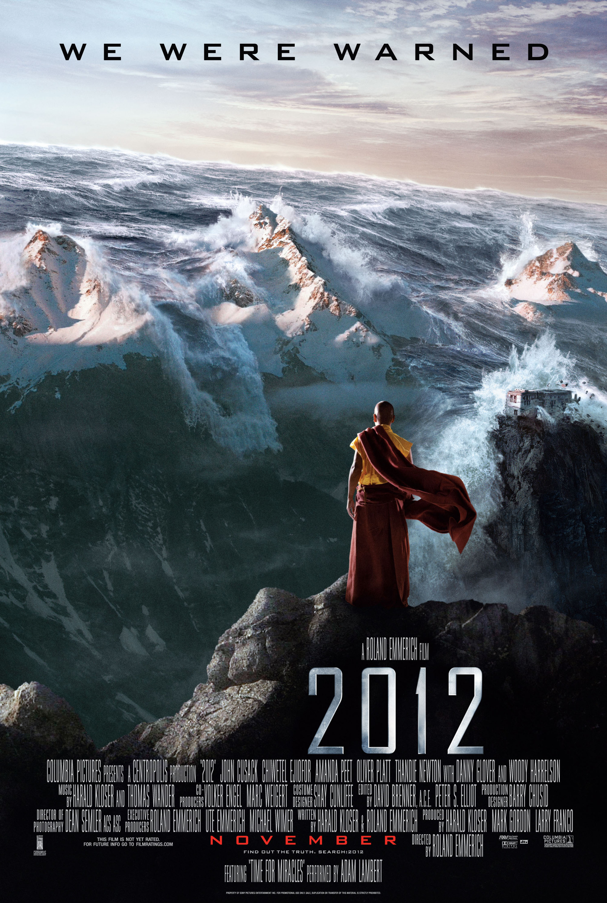

我不相信这会是人类的选择
2022 年 6 月 30 日晚观看《2012》电影，评价： ⭐ ⭐ ⭐
Warning ⚠️: 本文有大量流汗黄豆出没
几天前的一个晚上，我在寝室里观看了2009年上映的电影《2012》。看这部电影的前半段时，我会想要给它 5 星，因为剧情的张力很足，特效也很棒。主角一家人有很多次都差一点就领盒饭了，实在是扣人心弦。但当我看完整个电影，我觉得整个电影给 2 星，然后主角小女儿很可爱再加 1 星，不能再多了 😅
《2012》是一部风评较好的灾难电影，在电影中，由于太阳运动导致地球内部出现了剧烈的变化，板块大幅度移动，引发了频繁的大地震、大海啸等灾难——也就是说，「世界末日」到了。但是在这个背景下，电影中各国政府的反应，以及一些情节的设置，让我感到非常的无语。
首先电影开场时是 2009 年，印度 🇮🇳 的科学家已经发现了地球很有可能在几年后毁灭，并且将这个信息告诉了美国 🇺🇸 的同行，进而告知了美国总统。然后美国总统就召集其它大国的政府首脑开了个会，宣布了这个消息。此时距离预言的世界末日还有 3 年多。那么这 3 年里，各个国家的政府在做什么呢？他们没有去想如何转移民众，没有去想如何尽可能地让更多人在灾难中活命，更没有想过如何重建灾后的世界。他们在偷偷地建造「方舟」😅 所谓「方舟」，就是一些巨大的船，3 年时间里一共造了 4 艘，能够装下 40 万人。40 万？？？全世界 70 亿人，你们这些政府打算只让其中的 0.057‰ 活命？而且他们并不告诉民众这个计划，也不告诉民众即将到来的灾难，而是假装一切正常，无事发生。如果有人想要将这个计划透露给民众，格杀勿论 🤐
那么如何选出这 40 万人以及其它要上船的东西呢？首先各国的政府首脑、重要科学家，以及各行各业的专家肯定是要上船的；然后造船的钱也不能直接从国库里拿，所以就只能去偷偷告诉一些富豪，让他们以 10 亿欧元一张的价格来购买船票，从而获得造船的资金；还得抓一些大象 🐘 、长颈鹿 🦒 啥的，毕竟要保证「方舟」的物种多样性；最后呢，那些珍贵的艺术品 🖼️ 当然也要偷偷运进来。好家伙，这是真把自己当作人类文明的「火种」了！实在是无耻至极！
等到灾难逐渐发生了，全球的民众依然蒙在鼓里——因为美国的政府官员执意要等到登船完成后才能告诉民众真相。有一个场景令我印象深刻，加州政府正在召开记者发布会，发言人说一切正常，大家不用担心，然后突然又地震了，发布会会场直接震塌了 😅 最后等一切都要完蛋了，各国权贵基本上都上船了，这时候美国总统开始祈祷了，说他不上船了，他与人民同在，他要告诉人民真相，这样家人还可以互相道别 😅 我**真的太感动了，哈哈，不愧是美国总统。
到这里，我们还可以认为这只是导演想要故意表现各国政府和权贵在灾难前的恶心，那接下来的情节就彻底打破了这个可能性。4 艘「方舟」里， 3 号因为地震而寄了，然后买了 3 号船票的乘客没法上船，就想挤到 4 号去。但一方面4号的物资也承载不了两倍的人数，另一方面还有几分钟大洪水就要来了，所以美国官员首先不同意。但我们的主角之一——美国的黑人科学家 👨🏿🔬 ——对各国首脑来了个极富情感的演讲，说我们人类文明就是要互帮互助的，如果现在我们眼睁睁地看着这个场面（指3号船的乘客上不了船）而不去救他们，那我们还算什么文明？然后其它国家的首脑就同意了，然后就让 3 号船的乘客上来了。我**看到这里的时候已经蚌埠住了，你还说互帮互助？你还说文明？你们**已经放弃了全世界 99.99% 的人，现在来对这 10 万权贵开始讲互帮互助？搁这强行升华主题，我只能流汗流汗 😅 😅 😅
还有一个蚌埠情节，男主一家人是偷渡上来的，本来已经成功了，但因为 4 号船突然决定把3号船的乘客接上来，就又把门打开，然后他们就掉下去了，男二直接挂了，还有些人也受了伤。最要命的是有个什么东西把齿轮卡住了，导致门关不上——门关不上就无法启动发动机（这是什么逆天设定），就只能原地等死（因为洪水马上就要来了）。最后男主强行憋气潜水下去（因为水已经涌进来了），在船马上要撞上珠穆朗玛峰的时候，把那个卡着的东西给拔掉了，然后控制室里一片欢呼，发动机正常启动，避免了撞击。我寻思你们欢呼啥？前一秒还在认票不认人，下一秒就为偷渡者（男主）解决了他们自己引起的危险而欢呼，真有你的 😅
总的来说，这部电影与我的价值观有着较大的冲突。像《三体》《流浪地球》这类灾难类电影，人类都会在末日面前齐心协力，比如成立太空舰队、建造行星发动机等等。虽然说在电影里，从发现到灾难发生只有 3 年时间，但其实还有很多能做的啊，比如尝试建造更实用的船（黑人科学家踏进分配给他一个人的船舱时说：“这地方甚至能住十个人！”）、尝试研究新的食物获取技术、发送更多的网络卫星来保证地面通信等等。而且在开诚布公的情况下来做这些事情，所能调用的人力、物力资源肯定也比秘密建造要多得多。从根本上来说，我不相信各国的政府会在灾难面前，选择抛弃 99.99% 的人类。
一点题外话：建造方舟的地点选择在了中国西藏 :flag_cn: 的邱明谷（Cho Ming Valley），虽然这是一个虚构地点，但在电影里看到中国元素还有点意思。我猜之所以要选择这个喜马拉雅山的山谷建造，应该是不想让人发现吧。但说实话在地震、海啸来临时，山谷肯定是最容易受到灾害的……
以及，这个海报倒确实挺帅的（
